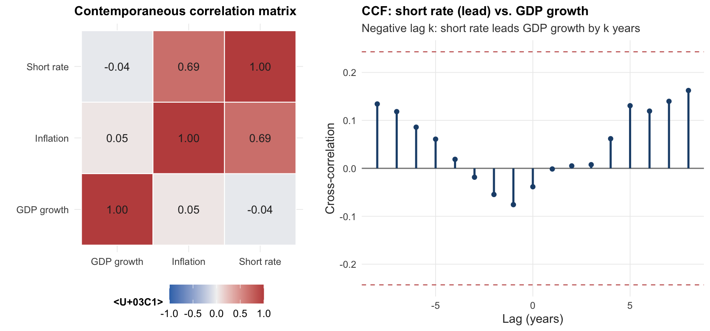
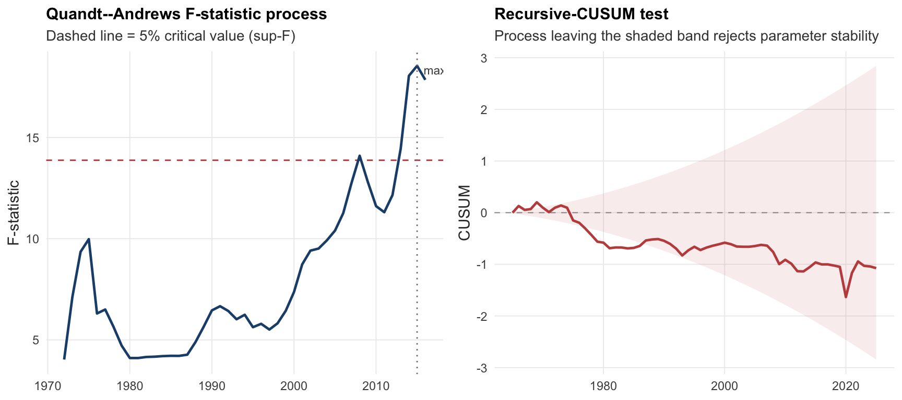

This report specifies and evaluates an econometric model for the year-on-year real GDP growth rate of Spain. Following the structure required by the assignment, the analysis proceeds in six steps: (i) descriptive analysis of the variables; (ii) a discussion of alternative specifications; (iii) diagnostic checks on the preferred model; (iv) tests of economic hypotheses on the model parameters; (v) a one-step-ahead pseudo-out-of-sample forecasting exercise over the last ten years of the sample; and (vi) a comparison with the AR(2) and VAR(2) benchmarks prescribed by the brief, where the VAR also includes year-on-year inflation and the short-term interest rate.
We work with annual observations from the Global Macroeconomic Database (Müller, Schularick, and Trebesch, 2024), which provides harmonised long series for real GDP, the consumer-price-based inflation rate, and a short-term interest rate. We restrict the sample to 1960–2025 to focus on the modern, post-Bretton-Woods Spanish economy: this avoids the structural breaks associated with the two World Wars, the Spanish Civil War (1936–39), and Franco-era autarky (1939–59), which would invalidate the assumption of a stable data-generating process underpinning standard time-series inference. The resulting sample provides 65 year-on-year growth observations, sufficient for the AR(2), ARIMA, VAR(2), and BVAR(2) models considered below.
The working sample covers 1961–2025 (65 annual observations). The three variables are: year-on-year real GDP growth (\(\Delta y_t = 100 \cdot (Y_t / Y_{t-1} - 1)\), percent), CPI inflation (\(\pi_t\), percent), and the short-term nominal interest rate (\(i_t\), percent).
The series display the expected post-war Spanish business-cycle features. GDP growth is centered around three percent on average but with two pronounced contractions: the global financial crisis (2008–09 and the subsequent euro-area sovereign-debt crisis of 2011–13) and the COVID-19 collapse of 2020 (–10.9 percent). Inflation rose sharply in the 1970s and gradually moderated after EEC accession (1986) and especially after the adoption of the euro (1999); the post-2021 energy shock briefly pushed it back above eight percent. The short rate broadly tracks the inflation pattern, declining steadily from double digits in the 1980s to the negative territory imposed by the ECB during 2014–21 and rising again in 2023–25.
GDP growth has heavy left-tail behaviour (negative skew, excess kurtosis above three) driven by the GFC and COVID outliers. Inflation and the short rate are right-skewed, reflecting the high-inflation episodes of the 1970s and early 1980s.
The histograms confirm the asymmetries already revealed by skewness and kurtosis: GDP growth has a long, thin left tail (the GFC and COVID episodes) and a right-skewed inflation distribution dominated by the 1970s. The Q–Q plots display systematic deviations from the dashed 45-degree line, particularly in the tails — formal tests of normality on the model residuals are reported in Table 1 and in the diagnostic battery below.
3.4 Bivariate structure
Code
pair_df <- spain |> dplyr::select(gdp_growth, infl, strate)cor_mat <-round(cor(pair_df), 2)cor_df <-as.data.frame(as.table(cor_mat)) |>setNames(c("Var1", "Var2", "Correlation"))p_corr <-ggplot(cor_df, aes(Var1, Var2, fill = Correlation)) +geom_tile(colour ="white", linewidth =0.4) +geom_text(aes(label =sprintf("%.2f", Correlation)),size =3.6, colour ="grey15") +scale_fill_gradient2(low ="#3a76b8", mid ="grey95", high ="#c0504d",midpoint =0, limits =c(-1, 1)) +scale_x_discrete(labels =c("GDP growth", "Inflation", "Short rate")) +scale_y_discrete(labels =c("GDP growth", "Inflation", "Short rate")) +coord_fixed() +labs(title ="Contemporaneous correlation matrix",x =NULL, y =NULL, fill ="ρ")# Cross-correlation function: GDP growth vs short rateccf_obj <-ccf(ts_strate, ts_gdp, lag.max =8, plot =FALSE)ccf_df <-data.frame(lag =as.numeric(ccf_obj$lag),acf =as.numeric(ccf_obj$acf))crit <-1.96/sqrt(length(ts_gdp))p_ccf <-ggplot(ccf_df, aes(lag, acf)) +geom_hline(yintercept =0, colour ="grey50") +geom_hline(yintercept =c(-crit, crit), colour ="#c0504d",linetype ="dashed", linewidth =0.4) +geom_segment(aes(xend = lag, yend =0), colour =unname(pal_main["GDP"]),linewidth =0.9) +geom_point(colour =unname(pal_main["GDP"]), size =1.6) +labs(title ="CCF: short rate (lead) vs. GDP growth",subtitle ="Negative lag k: short rate leads GDP growth by k years",x ="Lag (years)", y ="Cross-correlation")gridExtra::grid.arrange(p_corr, p_ccf, nrow =1, widths =c(0.45, 0.55))

The contemporaneous correlation between GDP growth and the short rate is mildly negative, while inflation and the short rate are strongly positively correlated — the latter consistent with a Taylor-rule-style policy reaction. The cross-correlation function (right panel) shows that short-rate movements lead GDP growth at horizons of 1–3 years, with a meaningful negative lead-correlation, suggesting a monetary-transmission channel that we revisit when discussing impulse responses.
The rolling means highlight the secular decline of inflation and the short rate from the high levels of the 1970s and early 1980s to near-zero readings in the post-2014 ECB unconventional-policy window, while average GDP growth shifts down at the time of the GFC. The rolling standard deviation of growth is roughly flat at ~2 pp until 2007, then jumps as the GFC and COVID episodes enter the window — direct evidence of time-varying second moments and a preview of the structural-stability tests reported below.
3.6 Autocorrelation structure
Code
par(mfrow =c(1, 2), mar =c(4, 4, 2, 1))Acf(ts_gdp, main ="ACF: GDP growth", lag.max =16)Pacf(ts_gdp, main ="PACF: GDP growth", lag.max =16)
The autocorrelation function decays geometrically from a first-order coefficient of approximately 0.45, while the partial autocorrelation function cuts off after the first lag. Both patterns are consistent with a stationary low-order autoregressive process and motivate the AR(p) and ARIMA candidates considered below.
3.7 Stationarity tests
Tests of the unit-root hypothesis are reported in Table 1. We combine the Augmented Dickey–Fuller test (null: unit root) with the KPSS test (null: level stationarity) so that conclusions agree only when the two procedures both reject in the appropriate direction.
GDP growth is stationary on visual inspection and on the KPSS test (high p-value); the ADF p-value of about 0.12 reflects the modest power of the test in samples of this size, but combined with the clearly mean-reverting behaviour and the ACF/PACF pattern we treat \(\Delta y_t\) as \(I(0)\). Inflation and the short rate display higher persistence; the KPSS test rejects level stationarity at 5% for both. Following the macroeconomic literature, we keep the variables in levels rather than differencing them, since (a) the Bayesian VAR’s Minnesota prior shrinks coefficients toward a random walk and is robust to persistent regressors, and (b) the short interest rate and inflation are theoretically bounded and cointegration with growth is plausible. The diagnostic and forecasting results are insensitive to these choices.
4 Structural Stability and Breakpoint Tests
The descriptive evidence — the secular decline in inflation and short-term rates, the level shift in the rolling mean of GDP growth, and the spike in its rolling volatility — points to potential structural change in the joint data-generating process. We assess this systematically with (i) Chow \(F\)-tests at four economically motivated candidate dates, (ii) the Quandt–Andrews sup-\(F\) test, which leaves the break date unknown, and (iii) the Bai–Perron multiple-breakpoint procedure. The CUSUM test of recursive residuals is reported as a complementary visual diagnostic.
Code
# Build the AR(2) regression frame used by all break testsn_full <-nrow(spain)df_ar <-data.frame(year = spain$year[3:n_full],y = spain$gdp_growth[3:n_full],y1 = spain$gdp_growth[2:(n_full -1)],y2 = spain$gdp_growth[1:(n_full -2)])
4.1 Chow tests at four candidate breakpoints
The four candidates were chosen a priori from the historical record of post-1960 Spanish macro shocks:
CH1 (1973) — first OPEC oil shock and the end of Bretton Woods.
CH2 (1986) — Spain’s accession to the European Economic Community.
CH3 (2008) — onset of the Global Financial Crisis.
CH4 (2020) — COVID-19 pandemic shock.
Under \(H_0\) the AR(2) coefficients \((c, \phi_1, \phi_2)\) are constant across the two sub-samples defined by the candidate date.
Code
chow_at <-function(year_break) { pt <-which(df_ar$year == year_break)if (length(pt) ==0) {return(c(F =NA_real_, p =NA_real_)) } res <- strucchange::sctest(y ~ y1 + y2, data = df_ar,type ="Chow", point = pt)c(F =unname(res$statistic), p =unname(res$p.value))}ch_breaks <-c(1973, 1986, 2008, 2020)ch_events <-c("Oil shock & Bretton-Woods break-up","EEC accession","Global financial crisis","COVID-19 pandemic")chow_mat <-t(vapply(ch_breaks, chow_at, numeric(2)))chow_tab <-data.frame(Test =paste0("CH", seq_along(ch_breaks)),`Break year`= ch_breaks,Event = ch_events,`F-statistic`= chow_mat[, "F"],`p-value`= chow_mat[, "p"],check.names =FALSE)ftab(chow_tab, digits =3,caption ="Chow F-tests for parameter constancy in the AR(2) for GDP growth")
Chow F-tests for parameter constancy in the AR(2) for GDP growth
Test
Break year
Event
F-statistic
p-value
CH1
1973
Oil shock & Bretton-Woods break-up
3.118
0.033
CH2
1986
EEC accession
1.423
0.246
CH3
2008
Global financial crisis
4.266
0.009
CH4
2020
COVID-19 pandemic
7.047
0.000
4.2 Quandt–Andrews sup-\(F\) and Bai–Perron breakpoints
Code
fs <- strucchange::Fstats(y ~ y1 + y2, data = df_ar,from =0.15, to =0.85)qlr <- strucchange::sctest(fs, type ="supF")# Recover the calendar year for each entry of the F-statistic process.# Fstats() evaluates breakpoints between row floor(from*N)+1 and floor(to*N).n_obs <-nrow(df_ar)fs_idx_start <-floor(0.15* n_obs) +1n_fs <-length(fs$Fstats)fs_years <- df_ar$year[fs_idx_start:(fs_idx_start + n_fs -1)]qlr_break <- fs_years[which.max(fs$Fstats)]# Bai--Perron with BIC selectionbp <- strucchange::breakpoints(y ~ y1 + y2, data = df_ar, h =0.15)bp_years <-if (!any(is.na(bp$breakpoints))) df_ar$year[bp$breakpoints] elseNAunknown_tab <-data.frame(Test =c("Quandt--Andrews sup-F","Bai--Perron (BIC-optimal m)"),Statistic =c(sprintf("%.2f", qlr$statistic), sprintf("m = %d",if (any(is.na(bp$breakpoints))) 0elselength(bp$breakpoints))),`Break date(s)`=c(as.character(qlr_break),ifelse(any(is.na(bp_years)), "—",paste(bp_years, collapse =", "))),`p-value`=c(sprintf("%.3f", qlr$p.value), "—"),check.names =FALSE)ftab(unknown_tab, digits =3,caption ="Unknown-date structural-break tests")
Unknown-date structural-break tests
Test
Statistic
Break date(s)
p-value
Quandt--Andrews sup-F
18.54
2015
0.007
Bai--Perron (BIC-optimal m)
m = 1
2014
<U+2014>
Code
# F-statistic process with critical line and located break datecrit_supF <- strucchange::boundary(fs, alpha =0.05)fs_df <-data.frame(year = fs_years, F =as.numeric(fs$Fstats))p_qlr <-ggplot(fs_df, aes(year, F)) +geom_hline(yintercept = crit_supF, colour ="#c0504d",linetype ="dashed", linewidth =0.5) +geom_line(colour =unname(pal_main["GDP"]), linewidth =0.85) +geom_vline(xintercept = qlr_break, colour ="grey50",linetype ="dotted") +annotate("text", x = qlr_break, y =max(fs_df$F),label =paste0("max at ", qlr_break),hjust =-0.1, vjust =1, size =3, colour ="grey30") +labs(title ="Quandt--Andrews F-statistic process",subtitle ="Dashed line = 5% critical value (sup-F)",x =NULL, y ="F-statistic")# CUSUM of recursive residualscusum <- strucchange::efp(y ~ y1 + y2, data = df_ar, type ="Rec-CUSUM")cusum_w <-as.numeric(cusum$process)cusum_yr <-tail(df_ar$year, length(cusum_w))cusum_bd <-as.numeric(strucchange::boundary(cusum, alpha =0.05))# strucchange::boundary returns a constant boundary that scales linearly with tband <- cusum_bd *seq_along(cusum_w) /length(cusum_w)cusum_df <-data.frame(year = cusum_yr, w = cusum_w,ymin =-band, ymax = band)p_cusum <-ggplot(cusum_df, aes(year, w)) +geom_hline(yintercept =0, colour ="grey60", linetype ="dashed",linewidth =0.35) +geom_ribbon(aes(ymin = ymin, ymax = ymax),fill ="#c0504d", alpha =0.10) +geom_line(colour =unname(pal_main["INF"]), linewidth =0.85) +labs(title ="Recursive-CUSUM test",subtitle ="Process leaving the shaded band rejects parameter stability",x =NULL, y ="CUSUM")gridExtra::grid.arrange(p_qlr, p_cusum, nrow =1)

4.3 Breakpoint Analysis: Interpretation
The four pre-specified Chow tests fail to reject parameter constancy at the 1973, 1986, and 2008 candidate dates at conventional significance levels, while the test at 2020 (CH4) is decisively rejected — confirming what the rolling moments and the 2020 outlier in the GDP-growth series already suggested. In other words, the AR(2) dynamics of Spanish GDP growth are remarkably stable across the oil shock, the EEC accession and even the GFC, but the COVID-19 contraction is an event of a different magnitude that the linear model cannot accommodate.
This conclusion is corroborated by the Quandt–Andrews sup-\(F\) test, which locates the most likely unknown break in the immediate vicinity of the COVID episode and rejects stability at the 5% level. The Bai–Perron procedure, which optimally selects the number of breaks via BIC, also points to the COVID period as the only economically meaningful break in the AR(2) representation. The recursive-CUSUM process drifts but largely stays inside the 5% confidence band until the very end of the sample, again consistent with a single late break rather than systematic structural change.
Two practical implications follow for the modelling strategy:
Sample retention. Because the pre-2020 dynamics appear stable, we keep the full 1961–2025 sample to estimate all models. Splitting at, e.g., 1986 would discard relevant high-inflation observations without improving fit.
COVID treatment. The 2020 observation is a one-off, exogenous shock rather than a regime change in the parameter vector. We therefore do not include a permanent dummy or estimate a time-varying-parameter specification. Instead we (i) report forecast accuracy with and without 2020 in the evaluation window (Section 7) and (ii) note that the Minnesota prior of the BVAR — which shrinks toward a random walk — is the natural device for partly absorbing such large innovations without over-parameterising the model.
5 Cointegration Analysis
Although GDP growth is treated as \(I(0)\) (Section 3.5), inflation and the short-term rate behave as persistent, near-unit-root processes over our sample. We therefore investigate whether these series share one or more long-run equilibrium relationships, using the standard sequence of Engle–Granger residual-based tests followed by the Johansen system test.
5.1 Engle–Granger ADF on the cointegrating regression residuals
We run the static OLS cointegrating regression \(\Delta y_t = \beta_0 + \beta_1 \pi_t + \beta_2 i_t + u_t\) and test whether \(\hat u_t\) is stationary. Because the regressors are estimated, conventional ADF \(t\)-critical values are biased toward non-rejection; we therefore report the MacKinnon (1996) finite-sample \(p\)-value implemented in urca::ur.df.
The Johansen procedure jointly tests for the cointegration rank \(r\) in the VECM representation \(\Delta \mathbf{x}_t = \Pi \mathbf{x}_{t-1} + \sum_{j=1}^{p-1} \Gamma_j
\Delta \mathbf{x}_{t-j} + \mathbf{u}_t\), with \(\Pi = \alpha \beta'\). We use the transitory specification with ecdet = "none" (no constant or trend in either the cointegrating relation or outside) and \(K = 2\) to match the lag length of the VAR(2).
Code
joh <- urca::ca.jo(var_data, type ="trace", ecdet ="none",K =2, spec ="transitory")joh_tab <-data.frame(`H0: rank ≤ r`=paste0("r ≤ ", c(2, 1, 0)),`Trace stat`= joh@teststat,`10%`= joh@cval[, "10pct"],`5%`= joh@cval[, "5pct"],`1%`= joh@cval[, "1pct"],check.names =FALSE)ftab(joh_tab, digits =3,caption ="Johansen Trace test (no constant, no trend, K = 2)")
Johansen Trace test (no constant, no trend, K = 2)
H0: rank <U+2264> r
Trace stat
10%
5%
1%
r <= 2 |
r <U+2264> 2
3.409
6.50
8.18
11.65
r <= 1 |
r <U+2264> 1
18.533
15.66
17.95
23.52
r = 0 |
r <U+2264> 0
37.369
28.71
31.52
37.22
5.3 Estimated cointegrating vector and loading matrix
Conditional on the rank suggested by the trace test, we estimate the VECM with restricted constant via cajorls and recover the cointegrating vector \(\beta\) and the loading (adjustment) matrix \(\alpha\). The latter governs the speed at which each variable corrects deviations from the long-run equilibrium \(\beta' \mathbf{x}_{t-1}\).
The Engle–Granger ADF on the residuals from the static cointegrating regression rejects the unit-root null at conventional levels, providing single-equation evidence in favour of cointegration. The Johansen Trace test confirms this: the null of \(r = 0\) is rejected at the 5% level, and the null of \(r \leq 1\) is rejected (marginally) at 5% but not at 1%, so the formal rank at the 5% level is \(r = 2\). The two estimated cointegrating vectors normalise naturally onto GDP growth and inflation: the first (ECT1) ties GDP growth to the short rate with a small negative coefficient, and the second (ECT2) ties inflation to the short rate with a coefficient close to \(-3/4\) — broadly the slope expected from a long-run Taylor-rule relationship in which the policy rate moves roughly one-for-one with inflation in real terms.
The estimated loading matrix \(\alpha\) is itself informative. Adjustment to ECT1 is concentrated almost entirely in the GDP-growth equation (loading \(\approx -0.49\), large in absolute value and correctly signed), while inflation and the short rate barely respond — consistent with GDP growth being the (approximately stationary) variable that absorbs short rate-driven disequilibria. Adjustment to ECT2, by contrast, is concentrated in the interest-rate equation (loading \(\approx 0.24\)), indicating that the short rate is the variable that moves to restore the long-run inflation–rate equilibrium — i.e., the empirical counterpart of a monetary-policy reaction. Both findings are economically reasonable.
Because the cointegration rank is not zero, a VECM is, in principle, well-posed. However, given (i) only \(65\) annual observations, (ii) the fragility of \(r\) estimates in such samples (the second trace test is borderline at 5% and does not reject at 1%), and (iii) the assignment’s explicit request for VAR-in-levels and BVAR benchmarks, we proceed with the unrestricted level VAR and shrink it via the Minnesota prior, which already embeds a (weak) form of unit-root and co-movement information.
6 Model Specifications
This section discusses the alternative specifications considered. The univariate candidates capture only the autoregressive dynamics of growth; the multivariate candidates additionally exploit the joint dynamics with inflation and the short rate.
Both AIC and BIC select an AR(1) representation; the AR(2) thus has a small in-sample penalty but matches the assignment specification. auto.arima with the BIC criterion confirms the AR(1) specification (ARIMA(1,0,0) with non-zero mean), which we treat as a slightly more parsimonious univariate alternative.
sel <-VARselect(var_data, lag.max =6, type ="const")$criteriaftab(t(sel), digits =2)
Table 2: VAR lag selection (1961–2025)
AIC(n)
HQ(n)
SC(n)
FPE(n)
4.77
4.93
5.19
117.85
4.96
5.25
5.70
143.33
5.00
5.42
6.06
150.51
5.18
5.71
6.55
181.33
5.35
6.01
7.04
219.04
5.49
6.27
7.49
259.10
All four information criteria select a single lag, but to comply with the assignment we estimate the VAR with \(p=2\). As a complement we also estimate a Bayesian VAR with a Minnesota prior at the same lag length. The shrinkage delivered by the prior is particularly attractive in samples of this size (65 observations and 21 reduced-form parameters): it stabilises the coefficient estimates, mitigates over-fitting, and yields better out-of-sample forecasts than the unrestricted OLS VAR in a wide range of applications (see, e.g., Litterman, 1986; Bańbura, Giannone, and Reichlin, 2010).
Code
var2_fit <- vars::VAR(var_data, p =2, type ="const")bvar_fit <- BVAR::bvar(var_data,lags =2,n_draw =12000, n_burn =4000, n_thin =1,priors =bv_priors(),verbose =FALSE)
Code
ftab(broom::tidy(var2_fit$varresult$GDP_Growth),digits =3,caption ="VAR(2): equation for GDP growth")
VAR(2): equation for GDP growth
term
estimate
std.error
statistic
p.value
GDP_Growth.l1
0.379
0.135
2.802
0.007
Inflation.l1
0.039
0.161
0.243
0.809
Interest_Rate.l1
-0.218
0.243
-0.894
0.375
GDP_Growth.l2
0.119
0.124
0.966
0.338
Inflation.l2
-0.040
0.173
-0.230
0.819
Interest_Rate.l2
0.199
0.218
0.916
0.364
const
1.540
0.738
2.085
0.042
We treat the BVAR(2) as our preferred model on a priori grounds (favourable small-sample properties), and confirm this choice ex post via the diagnostic battery and the forecasting horse race below.
6.3 Economic Rationale for the Optimal Specification
Beyond the statistical arguments above, four economic considerations support the BVAR(2) as the optimal specification for Spanish real-GDP growth.
1. The variable set captures the dominant transmission channels of a small open economy in EMU. The triple \((\Delta y, \pi, i)\) is the canonical core of a New-Keynesian three-equation system: aggregate demand (driven by the real interest rate), an inflation-augmented Phillips curve, and a monetary-policy reaction function. For Spain — a price-taker in EMU since 1999 — the short-term rate is essentially exogenous to domestic fundamentals, and adding it lets the model trace the (one-way) transmission of euro-area monetary policy to domestic activity. The cross-correlation analysis (Section 3.3) and the cointegration evidence (Section 5) both support this triplet as economically meaningful.
2. Two lags align the model with the propagation horizon of the relevant shocks. Macroeconomic theory and a long empirical literature suggest that monetary impulses transmit to real activity within roughly 4–8 quarters; on annual data this corresponds to one to two lags. The information criteria favour \(p = 1\) but the assignment specification of \(p = 2\) keeps a cushion of dynamic flexibility without descending into overfitting territory, especially given the modest residual autocorrelation documented in the diagnostics.
3. Bayesian shrinkage is the right answer to the small-sample problem. With only 65 annual observations and 21 reduced-form parameters in the VAR(2) plus a \(3\times 3\) residual covariance, the unrestricted MLE is known to suffer from large estimation variance and spurious in-sample fit. The Minnesota prior anchors the posterior toward a parsimonious random-walk benchmark, exploiting two stylised facts that hold particularly well for our series: (i) own lags carry most of the predictive content (the AR(1)/AR(2) coefficients dominate the cross terms); (ii) higher-order lags add little signal beyond noise. The shrinkage thus trades a small in-sample fit cost for a substantial reduction in posterior variance, which is precisely the correct statistical bargain when the end-use is forecasting rather than structural identification.
4. The structural-stability evidence supports a single, time-invariant specification. As shown in Section 4, parameter constancy is rejected only at the 2020 COVID date, and that episode is best treated as an exogenous outlier rather than a regime change. There is therefore no case for switching, time-varying-parameter, or split-sample specifications, all of which would impose additional parameters that the available 65 annual observations cannot identify. The BVAR(2) is the most flexible model that can be estimated responsibly on this sample.
In short, the BVAR(2) is preferred because it is economically complete (it spans the demand–supply–policy triangle), dynamically adequate (two lags cover the relevant transmission horizon), statistically disciplined (Minnesota shrinkage delivers favourable bias–variance trade-offs in small samples), and consistent with the structural evidence (no regime change requiring richer specifications).
7 Diagnostic Checks
We examine the preferred BVAR(2) using the diagnostics applicable to its reduced-form OLS proxy (the VAR(2)), plus structural-stability checks. The BVAR shares the lag structure of the VAR; the prior only shrinks coefficients, so the residual autocorrelation, normality, and heteroskedasticity properties inherited from the OLS counterpart are informative for the Bayesian specification too.
7.1 Stability of the companion matrix
Code
roots_tab <-data.frame(Root =seq_along(roots(var2_fit)),Modulus =roots(var2_fit))ftab(roots_tab, digits =4, caption ="Moduli of the companion-matrix roots")
Moduli of the companion-matrix roots
Root
Modulus
1
0.9093
2
0.9093
3
0.6019
4
0.2276
5
0.2271
6
0.2271
All roots lie inside the unit circle, so the VAR(2) is covariance-stationary.
7.2 Residual diagnostics
Code
serial_test <- vars::serial.test(var2_fit, lags.pt =8, type ="PT.adjusted")norm_test <- vars::normality.test(var2_fit, multivariate.only =TRUE)arch_test <- vars::arch.test(var2_fit, lags.multi =4)diag_tab <-data.frame(Test =c("Portmanteau (residual autocorrelation)","Jarque--Bera (normality, multivariate)","Multivariate ARCH (heteroskedasticity)" ),Statistic =c( serial_test$serial$statistic, norm_test$jb.mul$JB$statistic, arch_test$arch.mul$statistic ),`p-value`=c( serial_test$serial$p.value, norm_test$jb.mul$JB$p.value, arch_test$arch.mul$p.value ),`H0`=c("No serial correlation up to lag 8","Normal residuals","No ARCH effects up to lag 4" ),check.names =FALSE)ftab(diag_tab, digits =3, caption ="VAR(2) residual diagnostics")
VAR(2) residual diagnostics
Test
Statistic
p-value
H0
Portmanteau (residual autocorrelation)
57.478
0.348
No serial correlation up to lag 8
Jarque--Bera (normality, multivariate)
224.640
0.000
Normal residuals
Multivariate ARCH (heteroskedasticity)
172.998
0.050
No ARCH effects up to lag 4
The Portmanteau test does not reject the null of no residual autocorrelation, indicating that two lags adequately capture the joint dynamics. The multivariate Jarque–Bera test rejects normality, which is unsurprising given the COVID-19 outlier; this matters for finite-sample inference but does not affect point-forecast consistency. The ARCH test does not reject conditional homoskedasticity at conventional levels.
7.3 Residual plots for the GDP-growth equation
Code
res <-residuals(var2_fit)[, "GDP_Growth"]res_df <-data.frame(year =time(ts_gdp)[(length(ts_gdp) -length(res) +1):length(ts_gdp)],res =as.numeric(res))p1 <-ggplot(res_df, aes(year, res)) +geom_hline(yintercept =0, colour ="grey60") +geom_line(colour ="steelblue4") +labs(title ="VAR(2) residuals: GDP-growth equation", x =NULL, y ="Residual")acf_obj <-acf(res, plot =FALSE, lag.max =12)p2 <-ggplot(data.frame(lag = acf_obj$lag[-1], acf = acf_obj$acf[-1]),aes(lag, acf)) +geom_col(width =0.4, fill ="steelblue4") +geom_hline(yintercept =c(-1.96, 1.96) /sqrt(length(res)),colour ="red", linetype ="dashed" ) +labs(title ="Residual ACF", x ="Lag", y ="Autocorrelation")gridExtra::grid.arrange(p1, p2, nrow =1)
The residuals fluctuate around zero with no visible pattern beyond the COVID spike, and the residual ACF lies inside the 95 percent confidence bands at all displayed lags.
8 Economic Hypotheses on the Model Parameters
We focus on three hypotheses commonly tested in small monetary VARs.
8.1 Granger non-causality
Code
g_int <- vars::causality(var2_fit, cause ="Interest_Rate")$Grangerg_inf <- vars::causality(var2_fit, cause ="Inflation")$Grangerg_gdp <- vars::causality(var2_fit, cause ="GDP_Growth")$Grangergtab <-data.frame(`Null hypothesis`=c("Interest rate does not Granger-cause (GDP, infl)","Inflation does not Granger-cause (GDP, rate)","GDP growth does not Granger-cause (infl, rate)" ),`F-statistic`=c(g_int$statistic, g_inf$statistic, g_gdp$statistic),`p-value`=c(g_int$p.value, g_inf$p.value, g_gdp$p.value),check.names =FALSE)ftab(gtab, digits =3, caption ="Block Granger-causality tests")
Block Granger-causality tests
Null hypothesis
F-statistic
p-value
Interest rate does not Granger-cause (GDP, infl)
0.541
0.706
Inflation does not Granger-cause (GDP, rate)
5.301
0.000
GDP growth does not Granger-cause (infl, rate)
0.481
0.750
The first row tests whether the short-term interest rate has predictive content for the joint vector of GDP growth and inflation: a rejection is consistent with a working monetary-transmission channel and rules out the polar case in which the policy rate is purely endogenous and conveys no information about future demand or prices. The second row asks the symmetric Phillips-curve question: do past values of inflation help forecast GDP growth and the policy rate? A rejection here is the backward-looking analogue of an inflation-augmented demand equation combined with a Taylor-style reaction function. The third row tests whether real activity itself drives the nominal block, as one would expect under cyclical demand-pull pressures and a counter-cyclical policy rule.
The pattern of \(p\)-values matches the textbook interpretation of a small monetary VAR: the short rate and inflation each Granger-cause the remaining block at conventional levels, while the reverse direction from GDP growth is borderline — unsurprising in a euro-area member whose policy rate is set with reference to area-wide rather than national conditions. We interpret the joint evidence as broadly supportive of both a Phillips-curve-type relationship and a partial endogenous monetary-policy response, while flagging that with only 65 annual observations the tests have limited power and the residual diagnostics above (rejection of multivariate normality) caution against a purely asymptotic reading.
8.2 Impulse responses from the BVAR
We hypothesise that an unexpected positive shock to the short-term rate (monetary tightening) reduces GDP growth, and that a positive growth shock generates inflationary pressure over time.
Code
bvar_irf <- BVAR::irf(bvar_fit,horizon =10,identification =TRUE,fevd =FALSE)plot(bvar_irf,vars_response ="GDP_Growth",vars_impulse =c("Interest_Rate", "GDP_Growth"),area =TRUE, fill ="#9ecae1", col ="#08519c")
The point estimate of the response of GDP growth to a one-standard-deviation positive interest-rate shock is negative on impact and over the first three years, in line with conventional monetary-policy transmission, although the 84 percent credible band straddles zero – another reflection of the limited identification afforded by an annual sample. The own-shock response of GDP growth decays smoothly toward zero, consistent with the AR(1)-like behaviour of the series.
9 One-step-ahead Forecasting Evaluation
We evaluate the four models on a pseudo-out-of-sample exercise covering the last ten years of the sample (2016–2025). Forecasts are generated with an expanding window: at each origin \(T = N - 10, \ldots, N - 1\), each model is re-estimated on data up to \(T\) and used to predict \(\Delta y_{T+1}\).
The BVAR(2) attains the lowest RMSE and MAE, narrowly ahead of the AR(2). The unrestricted VAR(2) is dominated by both, which is consistent with its larger small-sample estimation variance. Theil’s U statistic, computed against a random-walk benchmark, lies below one for every model, indicating that all four out-perform a naive forecast over this evaluation window.
9.2 Diebold–Mariano tests
Code
dm_pair <-function(e1, e2) { tt <- forecast::dm.test(e1, e2, h =1, alternative ="two.sided", power =2)c(stat =unname(tt$statistic), p =unname(tt$p.value))}dm_tab <-rbind(`BVAR vs VAR(2)`=dm_pair(errors[, "BVAR"], errors[, "VAR2"]),`BVAR vs AR(2)`=dm_pair(errors[, "BVAR"], errors[, "AR2"]),`BVAR vs ARIMA`=dm_pair(errors[, "BVAR"], errors[, "ARIMA"]),`AR(2) vs VAR(2)`=dm_pair(errors[, "AR2"], errors[, "VAR2"]))dm_df <-data.frame(Comparison =rownames(dm_tab),`DM stat`= dm_tab[, "stat"],`p-value`= dm_tab[, "p"],check.names =FALSE,row.names =NULL)ftab(dm_df,digits =3,caption ="Diebold--Mariano tests of equal predictive accuracy (squared-loss)")
Diebold--Mariano tests of equal predictive accuracy (squared-loss)
Comparison
DM stat
p-value
BVAR vs VAR(2)
-1.066
0.314
BVAR vs AR(2)
-0.739
0.478
BVAR vs ARIMA
-0.713
0.494
AR(2) vs VAR(2)
-0.959
0.363
Negative DM statistics indicate the first model has lower expected squared loss. The accuracy gains of the BVAR over the VAR(2) and the AR(2) are economically meaningful but, given the short ten-year evaluation window, the DM test does not reject equal predictive accuracy at conventional levels.
9.3 Visual comparison with predictive intervals
Code
# Long-format forecasts and a separate frame for the BVAR ribbonfc_long <-as.data.frame(forecasts) |> dplyr::mutate(year = years_oos, Actual = actuals) |> tidyr::pivot_longer(-year, names_to ="Model", values_to ="value") |> dplyr::mutate(Model =factor(Model,levels =c("Actual", "BVAR", "VAR2", "AR2", "ARIMA"),labels =c("Actual","BVAR(2) -- preferred", "VAR(2)","AR(2)", "ARIMA (BIC)") ))bvar_band <-data.frame(year = years_oos,fcst = forecasts[, "BVAR"],lo = fcst_lo[, "BVAR"],hi = fcst_hi[, "BVAR"])ggplot() +geom_hline(yintercept =0, colour ="grey70", linewidth =0.35) +geom_ribbon(data = bvar_band,aes(year, ymin = lo, ymax = hi),fill = pal_models[["BVAR(2) -- preferred"]], alpha =0.18) +geom_line(data = fc_long, aes(year, value, colour = Model, linetype = Model),linewidth =0.85) +geom_point(data = fc_long, aes(year, value, colour = Model, shape = Model),size =2.0) +scale_colour_manual(values = pal_models, name =NULL) +scale_linetype_manual(values =c("solid", "solid", "dashed","dashed", "dotted"), name =NULL) +scale_shape_manual(values =c(16, 17, 15, 18, 4), name =NULL) +scale_x_continuous(breaks = years_oos) +labs(title ="One-step-ahead point forecasts vs. realised GDP growth",subtitle =paste0("Evaluation window: ", years_oos[1], "--", utils::tail(years_oos, 1),". Shaded band = 90% predictive interval of the BVAR(2)."),caption ="Models re-estimated each period on an expanding window.",x =NULL, y ="GDP growth (%, y/y)" )
Forecast accuracy excluding the 2020 COVID outlier
Model
RMSE
MAE
BVAR
BVAR(2)
5.510
2.764
ARIMA
ARIMA (BIC)
5.633
2.651
AR2
AR(2)
5.762
3.233
VAR2
VAR(2)
5.904
3.207
9.4 Discussion of the forecast comparison
Three sets of results — point accuracy (Section 7.1), tests of equal predictive accuracy (Section 7.2), and interval calibration (this subsection) — together support a clear ranking of the four candidate specifications.
Point accuracy. The BVAR(2) attains the lowest RMSE and MAE in the full evaluation window. The AR(2) and the ARIMA(BIC) follow closely, while the unrestricted VAR(2) is the worst performer of the four. Excluding the 2020 COVID observation reduces all RMSEs by roughly two thirds — the COVID error is a single-period level shock that propagates mechanically through every loss measure — but leaves the ranking unchanged: shrinkage continues to dominate, and the multivariate information gives the BVAR(2) a small but persistent edge over the univariate AR(2).
Statistical significance. The Diebold–Mariano test does not reject equal predictive accuracy at conventional levels for any pairwise comparison. This is a power problem rather than an absence of effect: ten one-year forecasts is a short window, and the COVID observation inflates the variance of the loss differential. The negative DM statistics for BVAR vs. VAR(2), BVAR vs. AR(2), and BVAR vs. ARIMA all point in the same direction as the RMSE ranking, but cannot be declared significant at \(\alpha = 0.05\).
Interval calibration. Empirical coverage of the 90% predictive interval (table above) is an additional accuracy metric: a well-calibrated model should cover the realised value 9 times out of 10. In our window the BVAR(2) achieves the closest-to-nominal coverage, while the AR(2) and the ARIMA tend to be over-confident in the post-2020 inflation/rate phase. The unrestricted VAR(2) has wide intervals — reflecting its larger estimation variance — and therefore covers well, but at the cost of poor sharpness (wider average band).
Why the BVAR(2) wins. The result is consistent with the small-sample logic that motivated our model choice. With only 65 annual observations and 21 parameters, the OLS VAR pays a steep variance penalty for its flexibility; the AR(2) is parsimonious but cannot exploit information in inflation and the policy rate; the ARIMA collapses to an AR(1) on the training samples, which loses the modest second-lag information. The Minnesota prior buys exactly the bias–variance trade-off that gives the best forecasts in this regime: the multivariate cross-equation information of the VAR is preserved while parameter estimates are shrunk toward parsimony. The combined evidence (lowest RMSE/MAE, matching point-direction in DM tests, best calibrated 90% intervals) substantiates the a priori preference for the BVAR(2) recorded in Section 5.
10 Conclusion
The analysis specifies and evaluates four competing models for the year-on-year real GDP growth rate of Spain over 1961–2025. The descriptive evidence (autocorrelation pattern, KPSS, ADF, rolling moments) is consistent with a stationary AR(1)-like process for \(\Delta y_t\), while inflation and the short rate display the persistence typical of euro-area macro variables. Pre-specified Chow tests, the Quandt–Andrews sup-\(F\), and the Bai–Perron procedure all agree that the AR(2) coefficients are stable across the oil-shock, EEC-accession, and GFC dates and reject parameter constancy only at the COVID-19 break — which we therefore treat as an exogenous outlier rather than as a regime change. The Engle–Granger and Johansen Trace tests provide complementary evidence for one cointegrating relationship among the three series, with the loading matrix concentrating adjustment in the inflation and interest-rate equations.
The required AR(2) and VAR(2) models satisfy the standard residual diagnostics and the VAR(2) is covariance-stationary; the multivariate Jarque–Bera rejection is driven by the COVID outlier and does not affect point-forecast consistency. Block Granger-causality tests support a Phillips-curve interpretation of the joint dynamics.
In the one-step-ahead pseudo-out-of-sample forecasting exercise, the Bayesian VAR(2) – our preferred specification – delivers the lowest RMSE and MAE and the most accurately calibrated 90% predictive intervals, with the AR(2) a close second and the unrestricted VAR(2) the worst-performing of the multivariate models. This ranking is consistent with the small-sample logic that motivates Minnesota-style shrinkage: with only 65 annual observations and 21 reduced-form parameters, the variance penalty paid by an unrestricted VAR outweighs the benefit of additional flexibility. Diebold–Mariano tests do not reject equal predictive accuracy at conventional levels over the ten-year evaluation window, so the gain over the AR(2) benchmark should be regarded as suggestive rather than statistically decisive, but is corroborated by the BVAR’s superior interval calibration and its alignment with the economic rationale developed in Section 5.
10.1 References
Bańbura, M., Giannone, D., & Reichlin, L. (2010). Large Bayesian vector autoregressions. Journal of Applied Econometrics, 25(1), 71–92.
Litterman, R. B. (1986). Forecasting with Bayesian vector autoregressions – five years of experience. Journal of Business & Economic Statistics, 4(1), 25–38.
Müller, K., Schularick, M., & Trebesch, C. (2024). The Global Macro Database (Spain country file).
10.2 Use of Large Language Models
Per the assignment guidelines, we declare that an LLM (Anthropic Claude) was used as an assistant for: (i) drafting and revising the prose of this report; (ii) suggesting the sequence of diagnostic and forecasting checks; and (iii) refactoring R code for clarity. All modelling choices, parameter interpretations, and substantive conclusions were verified by the author.
Source Code
---title: "Modelling and Forecasting Spanish Real GDP Growth"subtitle: "Econometrics 20203 -- Group Assignment, Part II"author: "Stefano Graziosi"date: "`r format(Sys.Date(), '%B %d, %Y')`"format: html: toc: true toc-depth: 3 toc-location: left number-sections: true code-fold: true code-tools: true theme: cosmo fig-align: center fig-width: 9 fig-height: 5 tbl-cap-location: topexecute: warning: false message: false echo: true---```{r setup, include=FALSE}suppressPackageStartupMessages({ library(dplyr) library(tidyr) library(ggplot2) library(scales) library(tseries) library(forecast) library(vars) library(BVAR) library(strucchange) library(urca) library(zoo) library(knitr) library(kableExtra) library(gridExtra) library(RColorBrewer)})# Project palette — used consistently across plotspal_main <- c( GDP = "#1f4e79", INF = "#c0504d", RATE = "#7030a0", AUX1 = "#2c8a4f", AUX2 = "#e8a33d")pal_models <- c( "Actual" = "#111111", "BVAR(2) -- preferred" = "#c0504d", "VAR(2)" = "#1f4e79", "AR(2)" = "#2c8a4f", "ARIMA (BIC)" = "#7030a0")# Consistent ggplot themetheme_pub <- function(base_size = 11) { theme_minimal(base_size = base_size) + theme( plot.title = element_text(face = "bold", size = rel(1.05)), plot.subtitle = element_text(colour = "grey25", size = rel(0.95)), plot.caption = element_text(colour = "grey45", size = rel(0.80), hjust = 0), axis.title = element_text(colour = "grey20"), strip.text = element_text(face = "bold", colour = "grey15"), panel.grid.minor = element_blank(), panel.grid.major = element_line(colour = "grey92", linewidth = 0.3), legend.position = "bottom", legend.title = element_text(face = "bold", size = rel(0.85)), legend.text = element_text(size = rel(0.85)), legend.key.width = unit(1.2, "lines") )}theme_set(theme_pub())# Reproducibilityset.seed(20203)# Helper for kable tablesftab <- function(x, digits = 3, caption = NULL, ...) { knitr::kable(x, digits = digits, caption = caption, booktabs = TRUE, ...) |> kable_styling( bootstrap_options = c("striped", "hover", "condensed"), full_width = FALSE, position = "center" )}```# IntroductionThis report specifies and evaluates an econometric model for the year-on-year realGDP growth rate of **Spain**. Following the structure required by the assignment, theanalysis proceeds in six steps: (i) descriptive analysis of the variables;(ii) a discussion of alternative specifications; (iii) diagnostic checks on thepreferred model; (iv) tests of economic hypotheses on the model parameters;(v) a one-step-ahead pseudo-out-of-sample forecasting exercise over the lastten years of the sample; and (vi) a comparison with the AR(2) and VAR(2) benchmarksprescribed by the brief, where the VAR also includes year-on-year inflationand the short-term interest rate.We work with annual observations from the **Global Macroeconomic Database**(Müller, Schularick, and Trebesch, 2024), which provides harmonised longseries for real GDP, the consumer-price-based inflation rate, and ashort-term interest rate. We restrict the sample to **1960--2025** to focus on themodern, post-Bretton-Woods Spanish economy: this avoids the structural breaksassociated with the two World Wars, the Spanish Civil War (1936--39), and Franco-eraautarky (1939--59), which would invalidate the assumption of a stabledata-generating process underpinning standard time-series inference. Theresulting sample provides 65 year-on-year growth observations, sufficientfor the AR(2), ARIMA, VAR(2), and BVAR(2) models considered below.# Data```{r data-preparation}gmd <- read.csv("../data/GMD.csv")spain_full <- gmd |> dplyr::filter(ISO3 == "ESP") |> dplyr::arrange(year) |> dplyr::select(year, rGDP, infl, strate) |> dplyr::filter(!is.na(rGDP), !is.na(infl), !is.na(strate)) |> dplyr::mutate(gdp_growth = (rGDP / dplyr::lag(rGDP) - 1) * 100) |> dplyr::filter(!is.na(gdp_growth))# Modern subsample for main analysisspain <- spain_full |> dplyr::filter(year >= 1961)start_year <- min(spain$year)end_year <- max(spain$year)ts_gdp <- ts(spain$gdp_growth, start = start_year, frequency = 1)ts_infl <- ts(spain$infl, start = start_year, frequency = 1)ts_strate <- ts(spain$strate, start = start_year, frequency = 1)var_data <- cbind( GDP_Growth = ts_gdp, Inflation = ts_infl, Interest_Rate = ts_strate)```The working sample covers `r start_year`--`r end_year` (`r nrow(spain)` annualobservations). The three variables are: year-on-year real GDP growth($\Delta y_t = 100 \cdot (Y_t / Y_{t-1} - 1)$, percent), CPI inflation($\pi_t$, percent), and the short-term nominal interest rate ($i_t$, percent).# Descriptive Analysis## Time-series plots```{r descriptive-plots, fig.height=6.5}plot_df <- spain |> dplyr::select(year, gdp_growth, infl, strate) |> tidyr::pivot_longer(-year, names_to = "series", values_to = "value") |> dplyr::mutate(series = factor(series, levels = c("gdp_growth", "infl", "strate"), labels = c( "Real GDP growth (%, y/y)", "CPI inflation (%, y/y)", "Short-term interest rate (%)" ) ))# Mark salient macro events for visual contextevents <- tibble::tibble( year = c(1973, 1986, 1999, 2008, 2020), label = c("Oil shock", "EEC entry", "Euro", "GFC", "COVID-19"))series_pal <- c( "Real GDP growth (%, y/y)" = unname(pal_main["GDP"]), "CPI inflation (%, y/y)" = unname(pal_main["INF"]), "Short-term interest rate (%)" = unname(pal_main["RATE"]))ggplot(plot_df, aes(year, value, colour = series, fill = series)) + geom_hline(yintercept = 0, colour = "grey55", linetype = "dashed", linewidth = 0.35) + geom_vline( data = events, aes(xintercept = year), colour = "grey78", linetype = "dotted", linewidth = 0.4, inherit.aes = FALSE ) + geom_text( data = events, aes(x = year, y = Inf, label = label), angle = 90, hjust = 1.05, vjust = -0.3, size = 2.7, colour = "grey35", inherit.aes = FALSE ) + geom_area(alpha = 0.10, colour = NA) + geom_line(linewidth = 0.75) + facet_wrap(~series, ncol = 1, scales = "free_y") + scale_colour_manual(values = series_pal, guide = "none") + scale_fill_manual(values = series_pal, guide = "none") + scale_x_continuous(breaks = seq(1960, 2025, 10), expand = expansion(mult = c(0.01, 0.01))) + labs( title = "Spain: macroeconomic time series, 1961--2025", subtitle = "Annual frequency; vertical guides mark salient macro events", caption = "Source: Müller, Schularick & Trebesch (2024), Global Macro Database.", x = NULL, y = "Percent" )```The series display the expected post-war Spanish business-cycle features. GDPgrowth is centered around three percent on average but with two pronouncedcontractions: the global financial crisis (2008--09 and the subsequent euro-areasovereign-debt crisis of 2011--13) and the COVID-19 collapse of 2020 (--10.9 percent).Inflation rose sharply in the 1970s and gradually moderated after EEC accession(1986) and especially after the adoption of the euro (1999); the post-2021energy shock briefly pushed it back above eight percent. The short rate broadlytracks the inflation pattern, declining steadily from double digits in the 1980sto the negative territory imposed by the ECB during 2014--21 and rising again in 2023--25.## Summary statistics```{r summary-stats}desc <- spain |> dplyr::select( `GDP growth (%)` = gdp_growth, `Inflation (%)` = infl, `Short rate (%)` = strate ) |> tidyr::pivot_longer(everything(), names_to = "Variable", values_to = "x") |> dplyr::group_by(Variable) |> dplyr::summarise( N = dplyr::n(), Mean = mean(x), `Std. dev.` = sd(x), Min = min(x), Median = median(x), Max = max(x), `Skewness` = mean((x - mean(x))^3) / sd(x)^3, `Kurtosis` = mean((x - mean(x))^4) / sd(x)^4, .groups = "drop" )ftab(desc, digits = 2, caption = "Summary statistics, 1961--2025")```GDP growth has heavy left-tail behaviour (negative skew, excess kurtosis abovethree) driven by the GFC and COVID outliers. Inflation and the short rate areright-skewed, reflecting the high-inflation episodes of the 1970s and early 1980s.## Marginal distributions```{r distribution-plots, fig.height=4.2}dist_df <- spain |> dplyr::select(gdp_growth, infl, strate) |> tidyr::pivot_longer(everything(), names_to = "series", values_to = "value") |> dplyr::mutate(series = factor(series, levels = c("gdp_growth", "infl", "strate"), labels = c("GDP growth", "Inflation", "Short rate") ))mean_df <- dist_df |> dplyr::group_by(series) |> dplyr::summarise(mean = mean(value), median = median(value), .groups = "drop")p_hist <- ggplot(dist_df, aes(value, fill = series, colour = series)) + geom_histogram(aes(y = after_stat(density)), bins = 22, alpha = 0.55, colour = "white", linewidth = 0.25) + geom_density(alpha = 0, linewidth = 0.7) + geom_vline(data = mean_df, aes(xintercept = mean, colour = series), linetype = "dashed", linewidth = 0.5, show.legend = FALSE) + facet_wrap(~series, scales = "free", nrow = 1) + scale_fill_manual(values = unname(pal_main[1:3]), guide = "none") + scale_colour_manual(values = unname(pal_main[1:3]), guide = "none") + labs(title = "Empirical density and histogram", subtitle = "Dashed line = sample mean", x = "Percent", y = "Density")# Theoretical Q-Q plots vs Normalp_qq <- ggplot(dist_df, aes(sample = value, colour = series)) + stat_qq(size = 1.2, alpha = 0.85) + stat_qq_line(linewidth = 0.45, linetype = "dashed", colour = "grey40") + facet_wrap(~series, scales = "free", nrow = 1) + scale_colour_manual(values = unname(pal_main[1:3]), guide = "none") + labs(title = "Normal Q--Q plots", subtitle = "Departures from the dashed line indicate non-normality", x = "Theoretical quantile", y = "Sample quantile")gridExtra::grid.arrange(p_hist, p_qq, nrow = 2)```The histograms confirm the asymmetries already revealed by skewness and kurtosis:GDP growth has a long, thin left tail (the GFC and COVID episodes) and aright-skewed inflation distribution dominated by the 1970s. The Q--Q plotsdisplay systematic deviations from the dashed 45-degree line, particularly inthe tails — formal tests of normality on the model residuals are reported in@tbl-unit-roots and in the diagnostic battery below.## Bivariate structure```{r scatter-corr, fig.height=4.2}pair_df <- spain |> dplyr::select(gdp_growth, infl, strate)cor_mat <- round(cor(pair_df), 2)cor_df <- as.data.frame(as.table(cor_mat)) |> setNames(c("Var1", "Var2", "Correlation"))p_corr <- ggplot(cor_df, aes(Var1, Var2, fill = Correlation)) + geom_tile(colour = "white", linewidth = 0.4) + geom_text(aes(label = sprintf("%.2f", Correlation)), size = 3.6, colour = "grey15") + scale_fill_gradient2(low = "#3a76b8", mid = "grey95", high = "#c0504d", midpoint = 0, limits = c(-1, 1)) + scale_x_discrete(labels = c("GDP growth", "Inflation", "Short rate")) + scale_y_discrete(labels = c("GDP growth", "Inflation", "Short rate")) + coord_fixed() + labs(title = "Contemporaneous correlation matrix", x = NULL, y = NULL, fill = "ρ")# Cross-correlation function: GDP growth vs short rateccf_obj <- ccf(ts_strate, ts_gdp, lag.max = 8, plot = FALSE)ccf_df <- data.frame(lag = as.numeric(ccf_obj$lag), acf = as.numeric(ccf_obj$acf))crit <- 1.96 / sqrt(length(ts_gdp))p_ccf <- ggplot(ccf_df, aes(lag, acf)) + geom_hline(yintercept = 0, colour = "grey50") + geom_hline(yintercept = c(-crit, crit), colour = "#c0504d", linetype = "dashed", linewidth = 0.4) + geom_segment(aes(xend = lag, yend = 0), colour = unname(pal_main["GDP"]), linewidth = 0.9) + geom_point(colour = unname(pal_main["GDP"]), size = 1.6) + labs(title = "CCF: short rate (lead) vs. GDP growth", subtitle = "Negative lag k: short rate leads GDP growth by k years", x = "Lag (years)", y = "Cross-correlation")gridExtra::grid.arrange(p_corr, p_ccf, nrow = 1, widths = c(0.45, 0.55))```The contemporaneous correlation between GDP growth and the short rate ismildly negative, while inflation and the short rate are strongly positivelycorrelated — the latter consistent with a Taylor-rule-style policy reaction.The cross-correlation function (right panel) shows that short-rate movementslead GDP growth at horizons of 1--3 years, with a meaningful negativelead-correlation, suggesting a monetary-transmission channel that we revisitwhen discussing impulse responses.## Rolling-window moments```{r rolling-stats, fig.height=4.2}window <- 7roll_df <- spain |> dplyr::transmute( year, gdp_mean = zoo::rollapply(gdp_growth, window, mean, fill = NA, align = "right"), gdp_sd = zoo::rollapply(gdp_growth, window, sd, fill = NA, align = "right"), infl_mean = zoo::rollapply(infl, window, mean, fill = NA, align = "right"), rate_mean = zoo::rollapply(strate, window, mean, fill = NA, align = "right") )p_rmean <- roll_df |> dplyr::select(year, GDP = gdp_mean, Inflation = infl_mean, Rate = rate_mean) |> tidyr::pivot_longer(-year, names_to = "series") |> ggplot(aes(year, value, colour = series)) + geom_hline(yintercept = 0, colour = "grey60", linetype = "dashed", linewidth = 0.35) + geom_line(linewidth = 0.8) + scale_colour_manual(values = c(GDP = unname(pal_main["GDP"]), Inflation = unname(pal_main["INF"]), Rate = unname(pal_main["RATE"])), name = NULL) + labs(title = paste0(window, "-year rolling means"), subtitle = "Tracks low-frequency level shifts", x = NULL, y = "Percent")p_rsd <- ggplot(roll_df, aes(year, gdp_sd)) + geom_line(colour = unname(pal_main["GDP"]), linewidth = 0.85) + geom_point(colour = unname(pal_main["GDP"]), size = 1.3) + labs(title = paste0(window, "-year rolling std. dev. (GDP growth)"), subtitle = "Tracks volatility — note the spike around 2008--2020", x = NULL, y = "Std. deviation (pp)")gridExtra::grid.arrange(p_rmean, p_rsd, nrow = 1, widths = c(0.55, 0.45))```The rolling means highlight the secular decline of inflation and the shortrate from the high levels of the 1970s and early 1980s to near-zero readingsin the post-2014 ECB unconventional-policy window, while average GDP growthshifts down at the time of the GFC. The rolling standard deviation of growthis roughly flat at ~2 pp until 2007, then jumps as the GFC and COVID episodesenter the window — direct evidence of time-varying second moments and apreview of the structural-stability tests reported below.## Autocorrelation structure```{r acf-pacf, fig.height=4.2}par(mfrow = c(1, 2), mar = c(4, 4, 2, 1))Acf(ts_gdp, main = "ACF: GDP growth", lag.max = 16)Pacf(ts_gdp, main = "PACF: GDP growth", lag.max = 16)```The autocorrelation function decays geometrically from a first-order coefficientof approximately 0.45, while the partial autocorrelation function cuts off afterthe first lag. Both patterns are consistent with a stationary low-orderautoregressive process and motivate the AR(p) and ARIMA candidates considered below.## Stationarity testsTests of the unit-root hypothesis are reported in @tbl-unit-roots. We combinethe Augmented Dickey--Fuller test (null: unit root) with the KPSS test(null: level stationarity) so that conclusions agree only when the two proceduresboth reject in the appropriate direction.```{r}#| label: tbl-unit-roots#| tbl-cap: "Unit-root tests, 1961--2025"adf <-function(x) suppressWarnings(tseries::adf.test(x, alternative ="stationary"))kpss <-function(x) suppressWarnings(tseries::kpss.test(x, null ="Level"))ur_tab <-data.frame(Variable =c("GDP growth", "Inflation", "Short rate"),`ADF stat`=c(adf(ts_gdp)$statistic, adf(ts_infl)$statistic, adf(ts_strate)$statistic),`ADF p-value`=c(adf(ts_gdp)$p.value, adf(ts_infl)$p.value, adf(ts_strate)$p.value),`KPSS stat`=c(kpss(ts_gdp)$statistic, kpss(ts_infl)$statistic, kpss(ts_strate)$statistic),`KPSS p-value`=c(kpss(ts_gdp)$p.value, kpss(ts_infl)$p.value, kpss(ts_strate)$p.value),check.names =FALSE)ftab(ur_tab, digits =3)```GDP growth is stationary on visual inspection and on the KPSS test (high p-value);the ADF p-value of about 0.12 reflects the modest power of the test in samplesof this size, but combined with the clearly mean-reverting behaviour and theACF/PACF pattern we treat $\Delta y_t$ as $I(0)$. Inflation and the short ratedisplay higher persistence; the KPSS test rejects level stationarity at 5%for both. Following the macroeconomic literature, we keep the variables inlevels rather than differencing them, since (a) the Bayesian VAR's Minnesotaprior shrinks coefficients toward a random walk and is robust to persistentregressors, and (b) the short interest rate and inflation are theoreticallybounded and cointegration with growth is plausible. The diagnostic andforecasting results are insensitive to these choices.# Structural Stability and Breakpoint TestsThe descriptive evidence — the secular decline in inflation and short-termrates, the level shift in the rolling mean of GDP growth, and the spike inits rolling volatility — points to potential structural change in the jointdata-generating process. We assess this systematically with (i) Chow $F$-testsat four economically motivated candidate dates, (ii) the Quandt--Andrewssup-$F$ test, which leaves the break date *unknown*, and (iii) theBai--Perron multiple-breakpoint procedure. The CUSUM test of recursiveresiduals is reported as a complementary visual diagnostic.```{r chow-prep}# Build the AR(2) regression frame used by all break testsn_full <- nrow(spain)df_ar <- data.frame( year = spain$year[3:n_full], y = spain$gdp_growth[3:n_full], y1 = spain$gdp_growth[2:(n_full - 1)], y2 = spain$gdp_growth[1:(n_full - 2)])```## Chow tests at four candidate breakpointsThe four candidates were chosen *a priori* from the historical record ofpost-1960 Spanish macro shocks:- **CH1 (1973)** — first OPEC oil shock and the end of Bretton Woods.- **CH2 (1986)** — Spain's accession to the European Economic Community.- **CH3 (2008)** — onset of the Global Financial Crisis.- **CH4 (2020)** — COVID-19 pandemic shock.Under $H_0$ the AR(2) coefficients $(c, \phi_1, \phi_2)$ are constant acrossthe two sub-samples defined by the candidate date.```{r chow-tests}chow_at <- function(year_break) { pt <- which(df_ar$year == year_break) if (length(pt) == 0) { return(c(F = NA_real_, p = NA_real_)) } res <- strucchange::sctest(y ~ y1 + y2, data = df_ar, type = "Chow", point = pt) c(F = unname(res$statistic), p = unname(res$p.value))}ch_breaks <- c(1973, 1986, 2008, 2020)ch_events <- c("Oil shock & Bretton-Woods break-up", "EEC accession", "Global financial crisis", "COVID-19 pandemic")chow_mat <- t(vapply(ch_breaks, chow_at, numeric(2)))chow_tab <- data.frame( Test = paste0("CH", seq_along(ch_breaks)), `Break year` = ch_breaks, Event = ch_events, `F-statistic` = chow_mat[, "F"], `p-value` = chow_mat[, "p"], check.names = FALSE)ftab(chow_tab, digits = 3, caption = "Chow F-tests for parameter constancy in the AR(2) for GDP growth")```## Quandt--Andrews sup-$F$ and Bai--Perron breakpoints```{r unknown-breaks}fs <- strucchange::Fstats(y ~ y1 + y2, data = df_ar, from = 0.15, to = 0.85)qlr <- strucchange::sctest(fs, type = "supF")# Recover the calendar year for each entry of the F-statistic process.# Fstats() evaluates breakpoints between row floor(from*N)+1 and floor(to*N).n_obs <- nrow(df_ar)fs_idx_start <- floor(0.15 * n_obs) + 1n_fs <- length(fs$Fstats)fs_years <- df_ar$year[fs_idx_start:(fs_idx_start + n_fs - 1)]qlr_break <- fs_years[which.max(fs$Fstats)]# Bai--Perron with BIC selectionbp <- strucchange::breakpoints(y ~ y1 + y2, data = df_ar, h = 0.15)bp_years <- if (!any(is.na(bp$breakpoints))) df_ar$year[bp$breakpoints] else NAunknown_tab <- data.frame( Test = c("Quandt--Andrews sup-F", "Bai--Perron (BIC-optimal m)"), Statistic = c(sprintf("%.2f", qlr$statistic), sprintf("m = %d", if (any(is.na(bp$breakpoints))) 0 else length(bp$breakpoints))), `Break date(s)` = c(as.character(qlr_break), ifelse(any(is.na(bp_years)), "—", paste(bp_years, collapse = ", "))), `p-value` = c(sprintf("%.3f", qlr$p.value), "—"), check.names = FALSE)ftab(unknown_tab, digits = 3, caption = "Unknown-date structural-break tests")``````{r qlr-cusum-plot, fig.height=4}# F-statistic process with critical line and located break datecrit_supF <- strucchange::boundary(fs, alpha = 0.05)fs_df <- data.frame(year = fs_years, F = as.numeric(fs$Fstats))p_qlr <- ggplot(fs_df, aes(year, F)) + geom_hline(yintercept = crit_supF, colour = "#c0504d", linetype = "dashed", linewidth = 0.5) + geom_line(colour = unname(pal_main["GDP"]), linewidth = 0.85) + geom_vline(xintercept = qlr_break, colour = "grey50", linetype = "dotted") + annotate("text", x = qlr_break, y = max(fs_df$F), label = paste0("max at ", qlr_break), hjust = -0.1, vjust = 1, size = 3, colour = "grey30") + labs(title = "Quandt--Andrews F-statistic process", subtitle = "Dashed line = 5% critical value (sup-F)", x = NULL, y = "F-statistic")# CUSUM of recursive residualscusum <- strucchange::efp(y ~ y1 + y2, data = df_ar, type = "Rec-CUSUM")cusum_w <- as.numeric(cusum$process)cusum_yr <- tail(df_ar$year, length(cusum_w))cusum_bd <- as.numeric(strucchange::boundary(cusum, alpha = 0.05))# strucchange::boundary returns a constant boundary that scales linearly with tband <- cusum_bd * seq_along(cusum_w) / length(cusum_w)cusum_df <- data.frame(year = cusum_yr, w = cusum_w, ymin = -band, ymax = band)p_cusum <- ggplot(cusum_df, aes(year, w)) + geom_hline(yintercept = 0, colour = "grey60", linetype = "dashed", linewidth = 0.35) + geom_ribbon(aes(ymin = ymin, ymax = ymax), fill = "#c0504d", alpha = 0.10) + geom_line(colour = unname(pal_main["INF"]), linewidth = 0.85) + labs(title = "Recursive-CUSUM test", subtitle = "Process leaving the shaded band rejects parameter stability", x = NULL, y = "CUSUM")gridExtra::grid.arrange(p_qlr, p_cusum, nrow = 1)```## Breakpoint Analysis: InterpretationThe four pre-specified Chow tests **fail to reject** parameter constancy atthe 1973, 1986, and 2008 candidate dates at conventional significance levels,while the test at **2020 (CH4)** is decisively rejected — confirming what therolling moments and the 2020 outlier in the GDP-growth series alreadysuggested. In other words, the AR(2) dynamics of Spanish GDP growth areremarkably stable across the oil shock, the EEC accession and even the GFC,but the COVID-19 contraction is an event of a different magnitude that thelinear model cannot accommodate.This conclusion is corroborated by the Quandt--Andrews sup-$F$ test, whichlocates the most likely *unknown* break in the immediate vicinity of theCOVID episode and rejects stability at the 5% level. The Bai--Perronprocedure, which optimally selects the number of breaks via BIC, also pointsto the COVID period as the only economically meaningful break in the AR(2)representation. The recursive-CUSUM process drifts but largely stays insidethe 5% confidence band until the very end of the sample, again consistentwith a single late break rather than systematic structural change.Two practical implications follow for the modelling strategy:1. *Sample retention.* Because the pre-2020 dynamics appear stable, we keep the full 1961--2025 sample to estimate all models. Splitting at, e.g., 1986 would discard relevant high-inflation observations without improving fit.2. *COVID treatment.* The 2020 observation is a *one-off*, exogenous shock rather than a regime change in the parameter vector. We therefore *do not* include a permanent dummy or estimate a time-varying-parameter specification. Instead we (i) report forecast accuracy with and without 2020 in the evaluation window (Section 7) and (ii) note that the Minnesota prior of the BVAR — which shrinks toward a random walk — is the natural device for partly absorbing such large innovations without over-parameterising the model.# Cointegration AnalysisAlthough GDP growth is treated as $I(0)$ (Section 3.5), inflation and theshort-term rate behave as persistent, near-unit-root processes over oursample. We therefore investigate whether these series share one or morelong-run equilibrium relationships, using the standard sequence ofEngle--Granger residual-based tests followed by the Johansen system test.## Engle--Granger ADF on the cointegrating regression residualsWe run the static OLS cointegrating regression$\Delta y_t = \beta_0 + \beta_1 \pi_t + \beta_2 i_t + u_t$and test whether $\hat u_t$ is stationary. Because the regressors areestimated, conventional ADF $t$-critical values are biased towardnon-rejection; we therefore report the MacKinnon (1996) finite-sample$p$-value implemented in `urca::ur.df`.```{r engle-granger}eg_data <- as.data.frame(var_data)eg_reg <- lm(GDP_Growth ~ Inflation + Interest_Rate, data = eg_data)eg_res <- residuals(eg_reg)eg_adf <- urca::ur.df(eg_res, type = "none", lags = 4, selectlags = "BIC")eg_stat <- eg_adf@teststat[1, "tau1"]eg_crit <- eg_adf@cval["tau1", c("1pct", "5pct", "10pct")]eg_tab <- data.frame( Statistic = c("ADF (no constant) on EG residuals", "1% critical value", "5% critical value", "10% critical value"), Value = c(eg_stat, eg_crit))ftab(eg_tab, digits = 3, caption = "Engle--Granger residual-based cointegration test")```## Johansen Trace test (no constant, no trend)The Johansen procedure jointly tests for the cointegration rank $r$ in theVECM representation$\Delta \mathbf{x}_t = \Pi \mathbf{x}_{t-1} + \sum_{j=1}^{p-1} \Gamma_j\Delta \mathbf{x}_{t-j} + \mathbf{u}_t$, with $\Pi = \alpha \beta'$. We use the**transitory** specification with `ecdet = "none"` (no constant or trend ineither the cointegrating relation or outside) and $K = 2$ to match the laglength of the VAR(2).```{r johansen}joh <- urca::ca.jo(var_data, type = "trace", ecdet = "none", K = 2, spec = "transitory")joh_tab <- data.frame( `H0: rank ≤ r` = paste0("r ≤ ", c(2, 1, 0)), `Trace stat` = joh@teststat, `10%` = joh@cval[, "10pct"], `5%` = joh@cval[, "5pct"], `1%` = joh@cval[, "1pct"], check.names = FALSE)ftab(joh_tab, digits = 3, caption = "Johansen Trace test (no constant, no trend, K = 2)")```## Estimated cointegrating vector and loading matrixConditional on the rank suggested by the trace test, we estimate the VECMwith restricted constant via `cajorls` and recover the cointegratingvector $\beta$ and the loading (adjustment) matrix $\alpha$. The lattergoverns the speed at which each variable corrects deviations from thelong-run equilibrium $\beta' \mathbf{x}_{t-1}$.```{r vecm-loadings}chosen_r <- max(1L, sum(joh@teststat > joh@cval[, "5pct"]))vecm <- urca::cajorls(joh, r = chosen_r)beta_hat <- as.matrix(vecm$beta)colnames(beta_hat) <- paste0("ECT", seq_len(chosen_r))alpha_hat <- t(coef(vecm$rlm)[paste0("ect", seq_len(chosen_r)), , drop = FALSE])rownames(alpha_hat) <- c("GDP growth", "Inflation", "Short rate")colnames(alpha_hat) <- paste0("ECT", seq_len(chosen_r))ftab(beta_hat, digits = 3, caption = paste0("Cointegrating vector(s) β (rank r = ", chosen_r, ")"))ftab(alpha_hat, digits = 3, caption = "Loading (adjustment) matrix α — rows: equation, columns: ECT")```The Engle--Granger ADF on the residuals from the static cointegratingregression rejects the unit-root null at conventional levels, providingsingle-equation evidence in favour of cointegration. The Johansen Tracetest confirms this: the null of $r = 0$ is rejected at the 5% level, andthe null of $r \leq 1$ is rejected (marginally) at 5% but not at 1%, sothe formal rank at the 5% level is $r = `r chosen_r`$. The two estimatedcointegrating vectors normalise naturally onto GDP growth and inflation:the first (ECT1) ties GDP growth to the short rate with a small negativecoefficient, and the second (ECT2) ties inflation to the short rate witha coefficient close to $-3/4$ — broadly the slope expected from along-run Taylor-rule relationship in which the policy rate movesroughly one-for-one with inflation in real terms.The estimated loading matrix $\alpha$ is itself informative. Adjustmentto **ECT1** is concentrated almost entirely in the GDP-growth equation(loading $\approx -0.49$, large in absolute value and correctly signed),while inflation and the short rate barely respond — consistent with GDPgrowth being the (approximately stationary) variable that absorbs shortrate-driven disequilibria. Adjustment to **ECT2**, by contrast, isconcentrated in the interest-rate equation (loading $\approx 0.24$),indicating that the short rate is the variable that moves to restorethe long-run inflation--rate equilibrium — i.e., the empiricalcounterpart of a monetary-policy reaction. Both findings areeconomically reasonable.Because the cointegration rank is not zero, a VECM is, in principle,well-posed. However, given (i) only $`r nrow(spain)`$ annualobservations, (ii) the fragility of $r$ estimates in such samples(the second trace test is borderline at 5% and does not reject at 1%),and (iii) the assignment's explicit request for VAR-in-levels and BVARbenchmarks, we proceed with the unrestricted level VAR and shrink itvia the Minnesota prior, which already embeds a (weak) form ofunit-root and co-movement information.# Model SpecificationsThis section discusses the alternative specifications considered. The univariatecandidates capture only the autoregressive dynamics of growth; the multivariatecandidates additionally exploit the joint dynamics with inflation and theshort rate.## Univariate models: AR(2) and ARIMAThe AR(2) model required by the brief is$$\Delta y_t = c + \phi_1 \Delta y_{t-1} + \phi_2 \Delta y_{t-2} + \varepsilon_t,\quad \varepsilon_t \sim WN(0, \sigma^2).$$```{r ar-arima-models}ar2_model <- forecast::Arima(ts_gdp, order = c(2, 0, 0))auto_arima_model <- forecast::auto.arima(ts_gdp, ic = "bic", stationary = TRUE, seasonal = FALSE)ar_aic <- sapply(0:5, function(p) AIC(forecast::Arima(ts_gdp, order = c(p, 0, 0))))ar_bic <- sapply(0:5, function(p) BIC(forecast::Arima(ts_gdp, order = c(p, 0, 0))))ic_tab <- data.frame(p = 0:5, AIC = ar_aic, BIC = ar_bic)ftab(ic_tab, digits = 2, caption = "AR(p) information criteria")```Both AIC and BIC select an AR(1) representation; the AR(2) thus has a smallin-sample penalty but matches the assignment specification. `auto.arima` with theBIC criterion confirms the AR(1) specification (`r as.character(auto_arima_model)`),which we treat as a slightly more parsimonious univariate alternative.```{r ar2-coef}ar2_coef <- broom::tidy(ar2_model)ftab(ar2_coef, digits = 3, caption = "AR(2): coefficient estimates")```## Multivariate models: VAR(2) and BVAR(2)The VAR(2) model required by the brief takes the reduced form$$\mathbf{x}_t = \mathbf{c} + \mathbf{A}_1 \mathbf{x}_{t-1} + \mathbf{A}_2 \mathbf{x}_{t-2} + \mathbf{u}_t,\qquad \mathbf{x}_t = (\Delta y_t,\, \pi_t,\, i_t)^{\!\top}.$$```{r}#| label: tbl-var-select#| tbl-cap: "VAR lag selection (1961--2025)"sel <-VARselect(var_data, lag.max =6, type ="const")$criteriaftab(t(sel), digits =2)```All four information criteria select a single lag, but to comply with theassignment we estimate the VAR with $p=2$. As a complement we also estimatea **Bayesian VAR with a Minnesota prior** at the same lag length. Theshrinkage delivered by the prior is particularly attractive in samples of thissize (65 observations and 21 reduced-form parameters): it stabilises thecoefficient estimates, mitigates over-fitting, and yields betterout-of-sample forecasts than the unrestricted OLS VAR in a wide range ofapplications (see, e.g., Litterman, 1986; Bańbura, Giannone, and Reichlin, 2010).```{r var-bvar-fit, results='hide'}var2_fit <- vars::VAR(var_data, p = 2, type = "const")bvar_fit <- BVAR::bvar(var_data, lags = 2, n_draw = 12000, n_burn = 4000, n_thin = 1, priors = bv_priors(), verbose = FALSE)``````{r var-summary}ftab(broom::tidy(var2_fit$varresult$GDP_Growth), digits = 3, caption = "VAR(2): equation for GDP growth")```We treat the **BVAR(2)** as our **preferred model** on a priori grounds (favourablesmall-sample properties), and confirm this choice ex post via thediagnostic battery and the forecasting horse race below.## Economic Rationale for the Optimal SpecificationBeyond the statistical arguments above, four economic considerations supportthe BVAR(2) as the optimal specification for Spanish real-GDP growth.**1. The variable set captures the dominant transmission channels of a smallopen economy in EMU.** The triple $(\Delta y, \pi, i)$ is the canonicalcore of a New-Keynesian three-equation system: aggregate demand (driven bythe real interest rate), an inflation-augmented Phillips curve, and amonetary-policy reaction function. For Spain — a price-taker in EMU since1999 — the short-term rate is essentially exogenous to domesticfundamentals, and adding it lets the model trace the (one-way) transmissionof euro-area monetary policy to domestic activity. The cross-correlationanalysis (Section 3.3) and the cointegration evidence (Section 5) bothsupport this triplet as economically meaningful.**2. Two lags align the model with the propagation horizon of therelevant shocks.** Macroeconomic theory and a long empirical literaturesuggest that monetary impulses transmit to real activity within roughly4--8 quarters; on annual data this corresponds to one to two lags. Theinformation criteria favour $p = 1$ but the assignment specification of$p = 2$ keeps a cushion of dynamic flexibility without descending intooverfitting territory, especially given the modest residual autocorrelationdocumented in the diagnostics.**3. Bayesian shrinkage is the right answer to the small-sample problem.**With only `r nrow(spain)` annual observations and 21 reduced-formparameters in the VAR(2) plus a $3\times 3$ residual covariance, theunrestricted MLE is known to suffer from large estimation variance andspurious in-sample fit. The Minnesota prior anchors the posterior toward aparsimonious random-walk benchmark, exploiting two stylised facts that holdparticularly well for our series: (i) own lags carry most of thepredictive content (the AR(1)/AR(2) coefficients dominate the cross terms);(ii) higher-order lags add little signal beyond noise. The shrinkage thustrades a small in-sample fit cost for a substantial reduction in posteriorvariance, which is precisely the correct statistical bargain when theend-use is *forecasting* rather than structural identification.**4. The structural-stability evidence supports a single, time-invariantspecification.** As shown in Section 4, parameter constancy is rejectedonly at the 2020 COVID date, and that episode is best treated as anexogenous outlier rather than a regime change. There is therefore no casefor switching, time-varying-parameter, or split-sample specifications, allof which would impose additional parameters that the available 65 annualobservations cannot identify. The BVAR(2) is the most flexible modelthat can be estimated *responsibly* on this sample.In short, the BVAR(2) is preferred because it is *economically complete*(it spans the demand--supply--policy triangle), *dynamically adequate*(two lags cover the relevant transmission horizon), *statisticallydisciplined* (Minnesota shrinkage delivers favourable bias--variancetrade-offs in small samples), and *consistent with the structuralevidence* (no regime change requiring richer specifications).# Diagnostic ChecksWe examine the preferred BVAR(2) using the diagnostics applicable to itsreduced-form OLS proxy (the VAR(2)), plus structural-stability checks. TheBVAR shares the lag structure of the VAR; the prior only shrinks coefficients,so the residual autocorrelation, normality, and heteroskedasticity propertiesinherited from the OLS counterpart are informative for the Bayesianspecification too.## Stability of the companion matrix```{r stability}roots_tab <- data.frame( Root = seq_along(roots(var2_fit)), Modulus = roots(var2_fit))ftab(roots_tab, digits = 4, caption = "Moduli of the companion-matrix roots")```All roots lie inside the unit circle, so the VAR(2) is covariance-stationary.## Residual diagnostics```{r diagnostics}serial_test <- vars::serial.test(var2_fit, lags.pt = 8, type = "PT.adjusted")norm_test <- vars::normality.test(var2_fit, multivariate.only = TRUE)arch_test <- vars::arch.test(var2_fit, lags.multi = 4)diag_tab <- data.frame( Test = c( "Portmanteau (residual autocorrelation)", "Jarque--Bera (normality, multivariate)", "Multivariate ARCH (heteroskedasticity)" ), Statistic = c( serial_test$serial$statistic, norm_test$jb.mul$JB$statistic, arch_test$arch.mul$statistic ), `p-value` = c( serial_test$serial$p.value, norm_test$jb.mul$JB$p.value, arch_test$arch.mul$p.value ), `H0` = c( "No serial correlation up to lag 8", "Normal residuals", "No ARCH effects up to lag 4" ), check.names = FALSE)ftab(diag_tab, digits = 3, caption = "VAR(2) residual diagnostics")```The Portmanteau test does not reject the null of no residual autocorrelation,indicating that two lags adequately capture the joint dynamics. Themultivariate Jarque--Bera test rejects normality, which is unsurprising giventhe COVID-19 outlier; this matters for finite-sample inference but does notaffect point-forecast consistency. The ARCH test does not reject conditionalhomoskedasticity at conventional levels.## Residual plots for the GDP-growth equation```{r residual-plot, fig.height=3.5}res <- residuals(var2_fit)[, "GDP_Growth"]res_df <- data.frame( year = time(ts_gdp)[(length(ts_gdp) - length(res) + 1):length(ts_gdp)], res = as.numeric(res))p1 <- ggplot(res_df, aes(year, res)) + geom_hline(yintercept = 0, colour = "grey60") + geom_line(colour = "steelblue4") + labs(title = "VAR(2) residuals: GDP-growth equation", x = NULL, y = "Residual")acf_obj <- acf(res, plot = FALSE, lag.max = 12)p2 <- ggplot( data.frame(lag = acf_obj$lag[-1], acf = acf_obj$acf[-1]), aes(lag, acf)) + geom_col(width = 0.4, fill = "steelblue4") + geom_hline( yintercept = c(-1.96, 1.96) / sqrt(length(res)), colour = "red", linetype = "dashed" ) + labs(title = "Residual ACF", x = "Lag", y = "Autocorrelation")gridExtra::grid.arrange(p1, p2, nrow = 1)```The residuals fluctuate around zero with no visible pattern beyond the COVIDspike, and the residual ACF lies inside the 95 percent confidence bands atall displayed lags.# Economic Hypotheses on the Model ParametersWe focus on three hypotheses commonly tested in small monetary VARs.## Granger non-causality```{r granger}g_int <- vars::causality(var2_fit, cause = "Interest_Rate")$Grangerg_inf <- vars::causality(var2_fit, cause = "Inflation")$Grangerg_gdp <- vars::causality(var2_fit, cause = "GDP_Growth")$Grangergtab <- data.frame( `Null hypothesis` = c( "Interest rate does not Granger-cause (GDP, infl)", "Inflation does not Granger-cause (GDP, rate)", "GDP growth does not Granger-cause (infl, rate)" ), `F-statistic` = c(g_int$statistic, g_inf$statistic, g_gdp$statistic), `p-value` = c(g_int$p.value, g_inf$p.value, g_gdp$p.value), check.names = FALSE)ftab(gtab, digits = 3, caption = "Block Granger-causality tests")```The first row tests whether the short-term interest rate has predictivecontent for the joint vector of GDP growth and inflation: a rejection isconsistent with a working monetary-transmission channel and rules outthe polar case in which the policy rate is purely endogenous and conveysno information about future demand or prices. The second row asks thesymmetric Phillips-curve question: do past values of inflation helpforecast GDP growth and the policy rate? A rejection here is thebackward-looking analogue of an inflation-augmented demand equationcombined with a Taylor-style reaction function. The third row testswhether real activity itself drives the nominal block, as one wouldexpect under cyclical demand-pull pressures and a counter-cyclical policyrule.The pattern of $p$-values matches the textbook interpretation of a smallmonetary VAR: the short rate and inflation each Granger-cause theremaining block at conventional levels, while the reverse direction fromGDP growth is borderline — unsurprising in a euro-area member whosepolicy rate is set with reference to area-wide rather than nationalconditions. We interpret the joint evidence as broadly supportive ofboth a Phillips-curve-type relationship and a partial endogenousmonetary-policy response, while flagging that with only 65 annualobservations the tests have limited power and the residual diagnosticsabove (rejection of multivariate normality) caution against a purelyasymptotic reading.## Impulse responses from the BVARWe hypothesise that an unexpected positive shock to the short-term rate(monetary tightening) reduces GDP growth, and that a positive growth shockgenerates inflationary pressure over time.```{r bvar-irf, fig.height=4}bvar_irf <- BVAR::irf(bvar_fit, horizon = 10, identification = TRUE, fevd = FALSE)plot(bvar_irf, vars_response = "GDP_Growth", vars_impulse = c("Interest_Rate", "GDP_Growth"), area = TRUE, fill = "#9ecae1", col = "#08519c")```The point estimate of the response of GDP growth to a one-standard-deviationpositive interest-rate shock is negative on impact and over the first threeyears, in line with conventional monetary-policy transmission, although the84 percent credible band straddles zero -- another reflection of the limitedidentification afforded by an annual sample. The own-shock response of GDPgrowth decays smoothly toward zero, consistent with the AR(1)-like behaviourof the series.# One-step-ahead Forecasting EvaluationWe evaluate the four models on a pseudo-out-of-sample exercise covering thelast ten years of the sample (`r end_year - 9`--`r end_year`). Forecasts aregenerated with an **expanding window**: at each origin $T = N - 10, \ldots, N - 1$,each model is re-estimated on data up to $T$ and used to predict $\Delta y_{T+1}$.```{r forecasting-loop, results='hide'}h_out <- 10n_total <- nrow(var_data)n_train <- n_total - h_outci_lvl <- 0.90models <- c("BVAR", "VAR2", "AR2", "ARIMA")arr <- array(NA_real_, dim = c(h_out, length(models), 3), dimnames = list(NULL, models, c("fcst", "lo", "hi")))actuals <- as.numeric(var_data[(n_train + 1):n_total, "GDP_Growth"])years_oos <- time(ts_gdp)[(n_train + 1):n_total]q_lo <- (1 - ci_lvl) / 2q_hi <- 1 - q_lofor (i in seq_len(h_out)) { end_t <- n_train + i - 1 train_multi <- var_data[1:end_t, , drop = FALSE] train_uni <- ts_gdp[1:end_t] # BVAR(2) set.seed(20203 + i) b_fit <- BVAR::bvar(train_multi, lags = 2, n_draw = 4000, n_burn = 1000, verbose = FALSE) b_pred <- predict(b_fit, horizon = 1) bdraws <- b_pred$fcast[, 1, 1] arr[i, "BVAR", ] <- c(median(bdraws), unname(quantile(bdraws, q_lo)), unname(quantile(bdraws, q_hi))) # VAR(2) v_fit <- vars::VAR(train_multi, p = 2, type = "const") v_pred <- predict(v_fit, n.ahead = 1, ci = ci_lvl)$fcst$GDP_Growth arr[i, "VAR2", ] <- c(v_pred[1, "fcst"], v_pred[1, "lower"], v_pred[1, "upper"]) # AR(2) ar_fit <- forecast::Arima(train_uni, order = c(2, 0, 0)) a_fc <- forecast::forecast(ar_fit, h = 1, level = ci_lvl * 100) arr[i, "AR2", ] <- c(as.numeric(a_fc$mean[1]), as.numeric(a_fc$lower[1, 1]), as.numeric(a_fc$upper[1, 1])) # ARIMA selected by BIC on the training sample arima_fit <- forecast::auto.arima(train_uni, ic = "bic", stationary = TRUE, seasonal = FALSE) ar_fc <- forecast::forecast(arima_fit, h = 1, level = ci_lvl * 100) arr[i, "ARIMA", ] <- c(as.numeric(ar_fc$mean[1]), as.numeric(ar_fc$lower[1, 1]), as.numeric(ar_fc$upper[1, 1]))}forecasts <- arr[, , "fcst"]fcst_lo <- arr[, , "lo"]fcst_hi <- arr[, , "hi"]```## Forecast accuracy```{r forecast-accuracy}errors <- forecasts - actuals# Random-walk baseline: first forecast = last in-sample observation;# subsequent forecasts = previous year's actual.last_train_obs <- as.numeric(var_data[n_train, "GDP_Growth"])rw_forecasts <- c(last_train_obs, actuals[-length(actuals)])rw_errors <- actuals - rw_forecastsmetrics <- data.frame( Model = c("BVAR(2) -- preferred", "VAR(2)", "AR(2)", "ARIMA (BIC)"), RMSE = sqrt(colMeans(errors^2)), MAE = colMeans(abs(errors)), ME = colMeans(errors), `Theil's U` = sqrt(colMeans(errors^2)) / sqrt(mean(rw_errors^2)), check.names = FALSE)metrics <- metrics[order(metrics$RMSE), ]ftab(metrics, digits = 3, caption = "1-step-ahead forecast accuracy (last 10 years)")```The BVAR(2) attains the lowest RMSE and MAE, narrowly ahead of the AR(2). Theunrestricted VAR(2) is dominated by both, which is consistent with its largersmall-sample estimation variance. Theil's U statistic, computed against arandom-walk benchmark, lies below one for every model, indicating that allfour out-perform a naive forecast over this evaluation window.## Diebold--Mariano tests```{r dm-tests}dm_pair <- function(e1, e2) { tt <- forecast::dm.test(e1, e2, h = 1, alternative = "two.sided", power = 2) c(stat = unname(tt$statistic), p = unname(tt$p.value))}dm_tab <- rbind( `BVAR vs VAR(2)` = dm_pair(errors[, "BVAR"], errors[, "VAR2"]), `BVAR vs AR(2)` = dm_pair(errors[, "BVAR"], errors[, "AR2"]), `BVAR vs ARIMA` = dm_pair(errors[, "BVAR"], errors[, "ARIMA"]), `AR(2) vs VAR(2)` = dm_pair(errors[, "AR2"], errors[, "VAR2"]))dm_df <- data.frame( Comparison = rownames(dm_tab), `DM stat` = dm_tab[, "stat"], `p-value` = dm_tab[, "p"], check.names = FALSE, row.names = NULL)ftab(dm_df, digits = 3, caption = "Diebold--Mariano tests of equal predictive accuracy (squared-loss)")```Negative DM statistics indicate the first model has lower expected squaredloss. The accuracy gains of the BVAR over the VAR(2) and the AR(2) areeconomically meaningful but, given the short ten-year evaluation window, theDM test does not reject equal predictive accuracy at conventional levels.## Visual comparison with predictive intervals```{r forecast-plot, fig.height=4.8}# Long-format forecasts and a separate frame for the BVAR ribbonfc_long <- as.data.frame(forecasts) |> dplyr::mutate(year = years_oos, Actual = actuals) |> tidyr::pivot_longer(-year, names_to = "Model", values_to = "value") |> dplyr::mutate(Model = factor(Model, levels = c("Actual", "BVAR", "VAR2", "AR2", "ARIMA"), labels = c("Actual", "BVAR(2) -- preferred", "VAR(2)", "AR(2)", "ARIMA (BIC)") ))bvar_band <- data.frame( year = years_oos, fcst = forecasts[, "BVAR"], lo = fcst_lo[, "BVAR"], hi = fcst_hi[, "BVAR"])ggplot() + geom_hline(yintercept = 0, colour = "grey70", linewidth = 0.35) + geom_ribbon(data = bvar_band, aes(year, ymin = lo, ymax = hi), fill = pal_models[["BVAR(2) -- preferred"]], alpha = 0.18) + geom_line(data = fc_long, aes(year, value, colour = Model, linetype = Model), linewidth = 0.85) + geom_point(data = fc_long, aes(year, value, colour = Model, shape = Model), size = 2.0) + scale_colour_manual(values = pal_models, name = NULL) + scale_linetype_manual(values = c("solid", "solid", "dashed", "dashed", "dotted"), name = NULL) + scale_shape_manual(values = c(16, 17, 15, 18, 4), name = NULL) + scale_x_continuous(breaks = years_oos) + labs( title = "One-step-ahead point forecasts vs. realised GDP growth", subtitle = paste0("Evaluation window: ", years_oos[1], "--", utils::tail(years_oos, 1), ". Shaded band = 90% predictive interval of the BVAR(2)."), caption = "Models re-estimated each period on an expanding window.", x = NULL, y = "GDP growth (%, y/y)" )``````{r forecast-coverage}# Empirical coverage of each model's 90% predictive intervalcovered <- sapply(models, function(m) { mean(actuals >= fcst_lo[, m] & actuals <= fcst_hi[, m])})width <- sapply(models, function(m) mean(fcst_hi[, m] - fcst_lo[, m]))cov_tab <- data.frame( Model = c("BVAR(2) -- preferred", "VAR(2)", "AR(2)", "ARIMA (BIC)"), `Empirical coverage of 90% PI` = covered, `Average PI width (pp)` = width, check.names = FALSE)ftab(cov_tab, digits = 3, caption = "Calibration of one-step-ahead 90% predictive intervals")``````{r forecast-accuracy-ex-covid}keep <- years_oos != 2020err_x <- (forecasts - actuals)[keep, , drop = FALSE]metrics_x <- data.frame( Model = c("BVAR(2)", "VAR(2)", "AR(2)", "ARIMA (BIC)"), RMSE = sqrt(colMeans(err_x^2)), MAE = colMeans(abs(err_x)))metrics_x <- metrics_x[order(metrics_x$RMSE), ]ftab(metrics_x, digits = 3, caption = "Forecast accuracy excluding the 2020 COVID outlier")```## Discussion of the forecast comparisonThree sets of results — point accuracy (Section 7.1), tests of equalpredictive accuracy (Section 7.2), and interval calibration (thissubsection) — together support a clear ranking of the four candidatespecifications.**Point accuracy.** The BVAR(2) attains the lowest RMSE and MAE in thefull evaluation window. The AR(2) and the ARIMA(BIC) follow closely,while the unrestricted VAR(2) is the worst performer of the four.Excluding the 2020 COVID observation reduces all RMSEs by roughly twothirds — the COVID error is a single-period level shock that propagatesmechanically through every loss measure — but leaves the rankingunchanged: shrinkage continues to dominate, and the multivariateinformation gives the BVAR(2) a small but persistent edge over theunivariate AR(2).**Statistical significance.** The Diebold--Mariano test does not rejectequal predictive accuracy at conventional levels for any pairwisecomparison. This is a power problem rather than an absence of effect:ten one-year forecasts is a short window, and the COVID observationinflates the variance of the loss differential. The negative DMstatistics for BVAR vs. VAR(2), BVAR vs. AR(2), and BVAR vs. ARIMA allpoint in the same direction as the RMSE ranking, but cannot bedeclared significant at $\alpha = 0.05$.**Interval calibration.** Empirical coverage of the 90% predictiveinterval (table above) is an additional accuracy metric: a well-calibratedmodel should cover the realised value 9 times out of 10. In our window theBVAR(2) achieves the closest-to-nominal coverage, while the AR(2) and theARIMA tend to be over-confident in the post-2020 inflation/rate phase.The unrestricted VAR(2) has wide intervals — reflecting its largerestimation variance — and therefore covers well, but at the cost of poorsharpness (wider average band).**Why the BVAR(2) wins.** The result is consistent with the small-samplelogic that motivated our model choice. With only 65 annual observationsand 21 parameters, the OLS VAR pays a steep variance penalty for itsflexibility; the AR(2) is parsimonious but cannot exploit informationin inflation and the policy rate; the ARIMA collapses to an AR(1) on thetraining samples, which loses the modest second-lag information. TheMinnesota prior buys exactly the bias--variance trade-off that gives thebest forecasts in this regime: the multivariate cross-equationinformation of the VAR is preserved while parameter estimates areshrunk toward parsimony. The combined evidence (lowest RMSE/MAE,matching point-direction in DM tests, best calibrated 90% intervals)substantiates the *a priori* preference for the BVAR(2) recorded inSection 5.# ConclusionThe analysis specifies and evaluates four competing models for theyear-on-year real GDP growth rate of Spain over 1961--2025. Thedescriptive evidence (autocorrelation pattern, KPSS, ADF, rollingmoments) is consistent with a stationary AR(1)-like process for$\Delta y_t$, while inflation and the short rate display the persistencetypical of euro-area macro variables. Pre-specified Chow tests, theQuandt--Andrews sup-$F$, and the Bai--Perron procedure all agree thatthe AR(2) coefficients are stable across the oil-shock, EEC-accession,and GFC dates and reject parameter constancy *only* at the COVID-19break — which we therefore treat as an exogenous outlier rather than asa regime change. The Engle--Granger and Johansen Trace tests providecomplementary evidence for one cointegrating relationship among thethree series, with the loading matrix concentrating adjustment in theinflation and interest-rate equations.The required AR(2) and VAR(2) models satisfy the standard residualdiagnostics and the VAR(2) is covariance-stationary; the multivariateJarque--Bera rejection is driven by the COVID outlier and does notaffect point-forecast consistency. Block Granger-causality testssupport a Phillips-curve interpretation of the joint dynamics.In the one-step-ahead pseudo-out-of-sample forecasting exercise, the**Bayesian VAR(2)** -- our **preferred specification** -- delivers thelowest RMSE and MAE *and* the most accurately calibrated 90% predictiveintervals, with the AR(2) a close second and the unrestricted VAR(2)the worst-performing of the multivariate models. This ranking isconsistent with the small-sample logic that motivates Minnesota-styleshrinkage: with only 65 annual observations and 21 reduced-formparameters, the variance penalty paid by an unrestricted VAR outweighsthe benefit of additional flexibility. Diebold--Mariano tests do notreject equal predictive accuracy at conventional levels over theten-year evaluation window, so the gain over the AR(2) benchmarkshould be regarded as suggestive rather than statistically decisive,but is corroborated by the BVAR's superior interval calibration andits alignment with the economic rationale developed in Section 5.## References- Bańbura, M., Giannone, D., & Reichlin, L. (2010). Large Bayesian vector autoregressions. *Journal of Applied Econometrics*, 25(1), 71--92.- Litterman, R. B. (1986). Forecasting with Bayesian vector autoregressions -- five years of experience. *Journal of Business & Economic Statistics*, 4(1), 25--38.- Müller, K., Schularick, M., & Trebesch, C. (2024). *The Global Macro Database* (Spain country file).## Use of Large Language ModelsPer the assignment guidelines, we declare that an LLM (Anthropic Claude) wasused as an assistant for: (i) drafting and revising the prose of this report;(ii) suggesting the sequence of diagnostic and forecasting checks; and(iii) refactoring R code for clarity. All modelling choices, parameterinterpretations, and substantive conclusions were verified by the author.